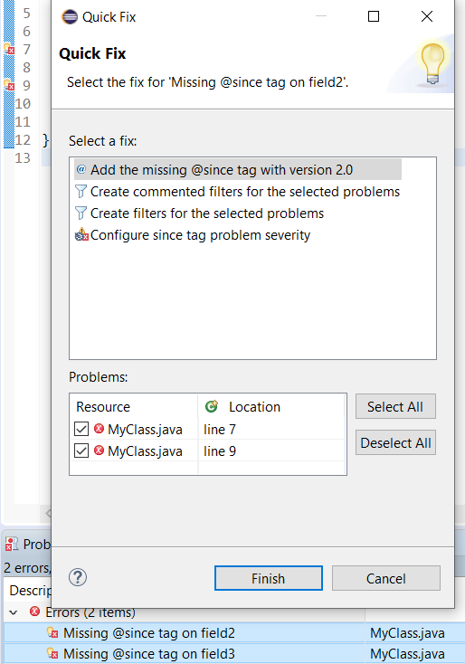
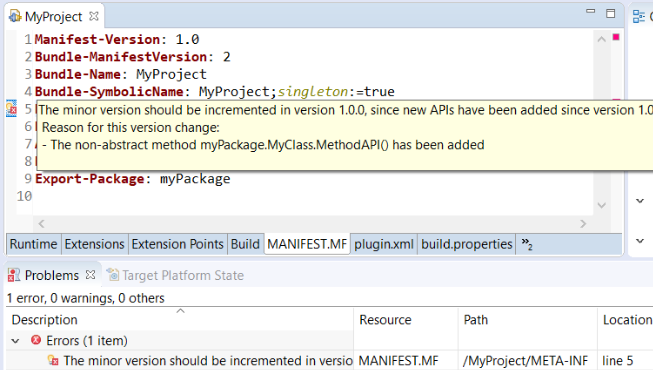

Here are descriptions of some of the more interesting or significant changes made to the Plug-in Development Environment (PDE) for the 4.16 release of Eclipse. They are grouped into:
API Tools |
|
| @since tag quick fixes are multi-fix |
All errors and warnings that can be fixed by @since tag operations such as adding missing
@since tag, correcting invalid @since tag can now be fixed in one go by the quick fix.
You can select all the @since tag errors and warnings and apply the quick fix (Ctrl + 1).
 |
| Hover to see version error details in Manifest |
Hovering on a version error in the Manifest editor now shows the list of changes that requires the
version to be changed. For the minor version change, it lists all the compatible changes and for the major
version change, it lists all the breaking changes.
 |